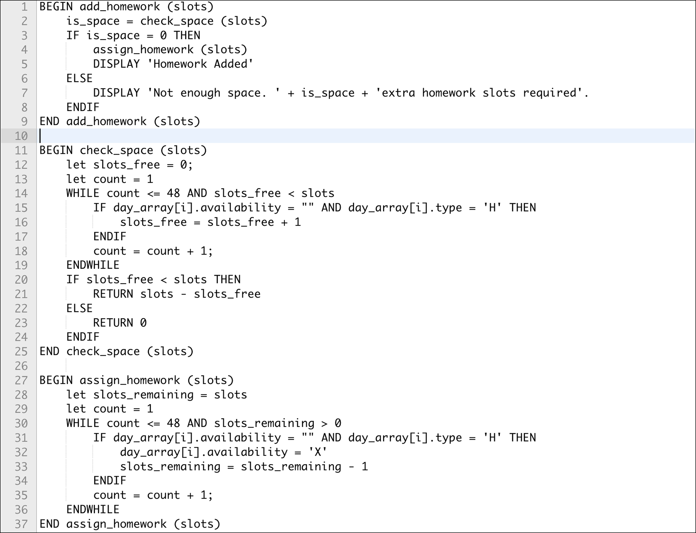
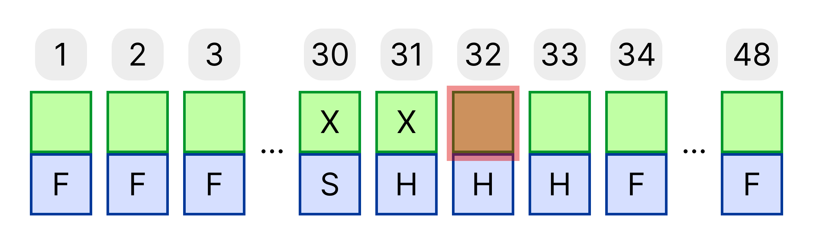
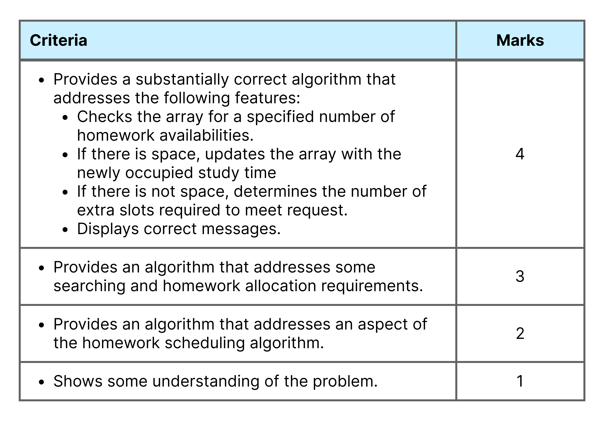

Sample Answer

Question Breakdown & Tips and Tricks
Question: Write the algorithm using pseudocode. Include at least one subroutine in your answer. (4 marks)
The array is called day_array and it is indexed from 1.
Step 1. Read the question carefully
When reading the question, it's important to ask these two questions:
- What is the topic/content area? This question is testing our ability to create algorithms and present them as pseudocode.
- What are we required to do? We are required to read the stimulus and write the algorithm described. We must ensure that we include at least one subroutine. We also get some crucial information regarding the name of the array we will be using and that it is indexed from 1.
Stimulus:
A company is developing a learning management system and wants to build an algorithm that will help schedule a student’s homework time to improve productivity.
A student’s day is represented as an array of records with a length of 48. This account for all the 30 minute time slots of a given day. Each record has a state which can be occupied or free. Slots that are free are empty and slots that are occupied have an ‘X’. The record also has a slot type which could be ‘H’ for homework, ‘S’ for school time, and ‘F’ for free time. Homework time can only be added to time slots that have a type “H”.
Your job is to write an algorithm that takes the number of homework slots a student would like to add to their schedule and see if it fits in their current day. If there is enough space, each homework time slot that is used should be filled with an ‘X”. The program should then return “Homework Added”.
If there is not enough space, it should return “Not enough space” followed by the number of extra homework slots required. E.g “Not enough space. 1 extra homework slot required”.
For example, if the array looked like the one below and the student wanted to add one homework slot, the program would add an X to the availability part of the record at index 32 and return “Homework Added”.

Step 2. Analyse the stimulus
You need to highlight everything you are told about the nature of the program. In this case everything we know about the array which stores the students daily schedule is highlighted in yellow.
Highlight what you need to make (in green above) and then all the requirements of the program (in blue above).
Array based question will sometimes include a diagram for you to aid in understanding the scenario.
Note that since we are working with an array of records, we can access each field of the record using the dot operator like day_array[i].type
Step 3. Write your mainline and decide on the subroutines you will use.
Figuring out the mainline will come primarily from our blue highlights since they define the different outputs and pathways our algorithm needs to have. We will also identify the subroutines we need as we write the mainline.
- The first thing the program needs to do is check the availability for adding a certain number of homework slots. We will use a check_space subroutine to see if there is space. This subroutine will return 0 if there is space and if there isn't, it will return the number of extra spaces required.
- Then if there is space, we need to add the set the slots of occupied and return "Homework Added". We will use a subroutine called assign_homework to set the homework slots of occupied.
- If there is no space, we send a message to the user with the number of extra slots required to meet the request.
These three requirements give us the following mainline.
BEGIN add_homework (slots)
is_space = check_space (slots)
IF is_space = 0 THEN
assign_homework (slots)
DISPLAY 'Homework Added'
ELSE
DISPLAY 'Not enough space. ' + is_space + 'extra homework slots required'.
ENDIF
END add_homework (slots)
Note
The mainline is very simple, short, and un-cluttered. This is expected by the markers. You should not have your complicated, low-level logic in the mainline. The mainline should only contain a high-level overview that anyone could understand after reading it once. The subroutines it calls should do all the complex work.
Step 4. Write your subroutines.
In step 3, we identified two subroutines. These were check_space and assign_homework.
check_space requires us to iterate over all the time slots of the day and count how many free homework slots we have. To keep track of the free homework slots we use a variable called slots_free and we increment it when we find an index of the array that is not occupied and has a type of 'H' for homework. We are using a while loop because we don't just want to blindly iterate over the entire array, but rather keep going until we find the required number. If we get to the end and still don't have the required number, then we can confirm there are not enough slots, but if we find enough early, we don't want to keep iterating over the rest of the array since that would be inefficient.
assign_homework is used to set the availability of a certain number of homework slots being added by the user. Since we have already confirmed there are enough slots from the check_space subroutine, we can iterate over the array setting the availability of each homework slot to 'X' for however many we are adding.
Step 5. Reread the question and test the algorithm.
- Check your pseudocode syntax. You need to make sure the every IF finishes with an ENDIF and every WHILE end with and ENDWHILE. Recall that FOR loops don't have a standard ending keyword, but instead uses NEXT variable after the code inside the loop. Also ensure each of your subroutines have an END subroutine_name (all parameters if any) including all the parameters it takes in, if any. Make sure all these key works are capitalised.
- Check for silly mistakes. Ensure that you haven't forgotten to increment any variables your are using for iteration. E.g don't forget to iterate count or slots_free in this question.
- Check your logic. Test your subroutine in your head by passing in a value and running through it step by step to see what output you get. Make sure this is the correct output. If you subroutine has lots of cases, try values that lie on the edges of the cases to ensure all the pathways work as you expect.
Marking Criteria (through the eyes of a marker)

How to get full marks?
- The first key phrase is "substantially correct". This means, to get full marks, your algorithm doesn't have to be perfect. If you made one silly mistake like forgetting to increment on of the variables, you will likely still get full marks. Likewise, if you forget one ENDIF you still have a good chance of getting 4/4. That said, we are aiming to reduce the number of these errors so they don't add up.
- You need to practice a lot of different algorithm questions to get experience with different control structures and data types. There are lots of algorithm question that can be found in past HSC papers of the old Software Design and Development syllabus.
- Make sure you highlight the stimulus so you don't miss anything important and know exactly what you are making.
I'm completely stuck and not getting anywhere. How do I salvage as many marks as a I can?
- Don't leave the question blank. If you're totally stuck, there are always some basic things you can do to guarantee at least one or two marks. After this, flag the question so you can come back to it after you finish the rest of the exam, hopefully with fresh ideas to claim a few more marks.
- The best thing you can do is start by laying out your mainline. Read the stimulus and question carefully and think about what a program might need to do at it's most simply level to achieve the desired result. Often times the question will explicitly state what you mainline needs to do. From there you can create subroutines for each of the things the mainline has to do.